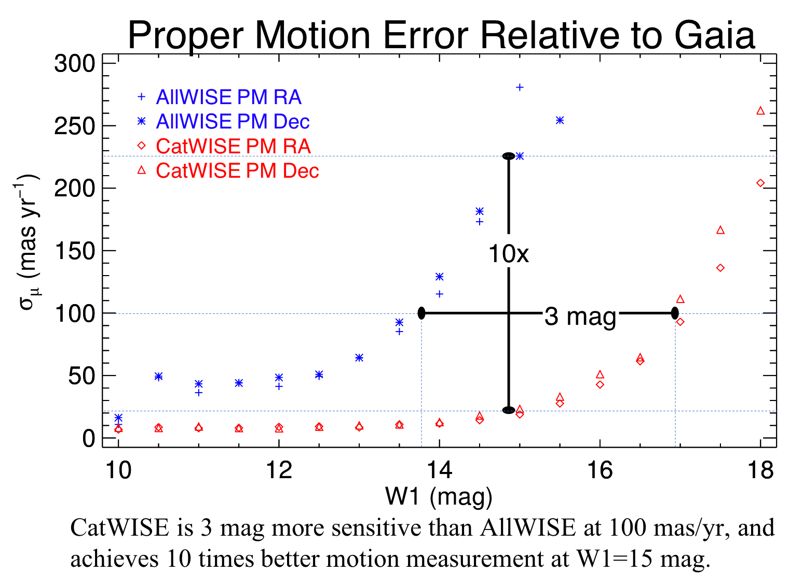

CatWISE Gallery


CatWISE
CatWISE is an all-sky infrared catalog at 3.4 and 4.6 microns selected from WISE and NEOWISE survey data.
CatWISE adapts AllWISE software to measure the sources in co-added images created by the unWISE team from six month subsets of these data, each representing one coverage of the inertial sky, or epoch. The catalog includes the brightness, position, and measured motion of sources over the time spanned by the data.
The Preliminary CatWISE catalog uses data collected from 2010 to 2016. This dataset includes 4x as many exposures and spans over 10x as large a time baseline as the dataset used for the AllWISE catalog, enabling the CatWISE catalog to include fainter sources and provide far more accurate measurements of their motions than AllWISE.
The CatWISE effort is led by the Jet Propulsion Laboratory, California Institute of Technology, with funding from NASA's Astrophysics Data Analysis Program. The CatWISE team is led by Principal Investigator Peter Eisenhardt.